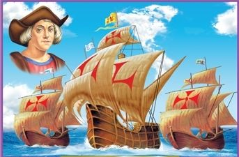

Descubrimiento de America:Se denomina descubrimiento de américa por las naciones europeas al acontecimiento histórico sucedido el 12 de octubre de 1492
Cristóbal Colón, en representación de los Reyes Católicos de Castilla y Aragón, reinos españoles,realizó cuatro famosos viajes desde Europa a América en 1492, 1493, 1498 y 1502. En el primero de ellos llegó a América el 12 de octubre de 1492
consistente en la llegada a América de una expedición española dirigida por Cristóbal Colón por mandato de los Reyes Católicos, Isabel de Castilla y Fernando de Aragón.
Varios años después de la llegada de Colón, los españoles fueron percatándose de que el lugar al que habían llegado no estaba conectado por tierra a Europa y el resto de la «tierra conocida»
El contacto con los españoles tuvo un enorme impacto en América. Se introdujo el conocimiento indigena en arte, ingenieria y ciencias, además de diferentes especies vegetales y animales, como el caballo